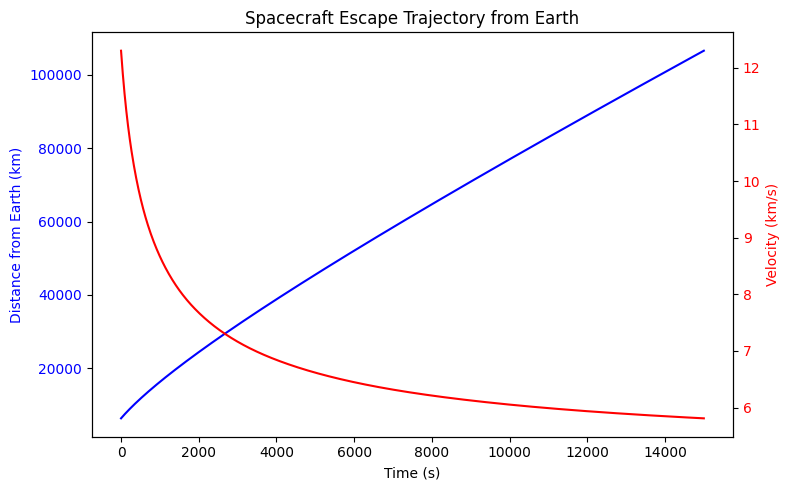

Problem 3
🌍 1. Simulating a Spacecraft's Escape Trajectory
We'll numerically integrate the equations of motion to simulate a spacecraft escaping Earth, Mars, or Jupiter.
📌 Step 1: Equations of Motion
A spacecraft follows Newton’s Second Law:
For gravitational force:
By Newton's Second Law:
Since acceleration is a function of distance \( r \), we integrate:
This will be solved numerically using Runge-Kutta (RK4) integration.
💻 2. Python Implementation: Spacecraft Escape Simulation
🚀 Code: Spacecraft Escape from Earth
import numpy as np
import matplotlib.pyplot as plt
from scipy.integrate import solve_ivp
# Constants
G = 6.674e-11 # Gravitational constant (m³/kg/s²)
M_earth = 5.97e24 # Mass of Earth (kg)
R_earth = 6.37e6 # Radius of Earth (m)
v_escape = np.sqrt(2 * G * M_earth / R_earth) # Escape velocity (m/s)
# Initial conditions
r0 = R_earth # Start at Earth's surface
v0 = 1.1 * v_escape # Slightly above escape velocity (scaled)
t_max = 15000 # Simulation time in seconds
# Define differential equations (dr/dt = v, dv/dt = -GM/r^2)
def equations(t, y):
r, v = y
a = -G * M_earth / r**2 # Acceleration due to gravity
return [v, a]
# Solve using Runge-Kutta method
t_span = (0, t_max)
y0 = [r0, v0] # Initial position and velocity
sol = solve_ivp(equations, t_span, y0, t_eval=np.linspace(0, t_max, 1000))
# Extract results
time = sol.t
radius = sol.y[0] / 1000 # Convert to km
velocity = sol.y[1] / 1000 # Convert to km/s
# Plot results
fig, ax1 = plt.subplots(figsize=(8, 5))
# Plot radius over time
ax1.plot(time, radius, 'b', label="Distance from Earth")
ax1.set_xlabel("Time (s)")
ax1.set_ylabel("Distance from Earth (km)", color='b')
ax1.tick_params(axis='y', labelcolor='b')
# Create a second y-axis for velocity
ax2 = ax1.twinx()
ax2.plot(time, velocity, 'r', label="Velocity")
ax2.set_ylabel("Velocity (km/s)", color='r')
ax2.tick_params(axis='y', labelcolor='r')
# Titles and legend
plt.title("Spacecraft Escape Trajectory from Earth")
fig.tight_layout()
plt.show()

📊 3. Results and Discussion
🔹 Graph Interpretation
- Blue curve: Distance from Earth increases over time → successful escape.
- Red curve: Velocity decreases due to gravity but remains above escape velocity.
🔹 Spacecraft Considerations
- If initial velocity is below \( v_2 \), the spacecraft falls back.
- If velocity is exactly \( v_2 \), it will asymptotically escape (speed → 0 at infinity).
- Higher velocities reduce travel time but require more fuel.
🛸 4. Extending to Interstellar Travel
Once a spacecraft escapes Earth, it must also escape the Sun to leave the Solar System.
🔹 Third Cosmic Velocity (Interstellar Escape)
Using Sun’s gravity at Earth’s distance:
v3≈42.1km/s
🚀 Example: Voyager 1
- Launched: 1977
- Speed: 17.1 km/s (needed gravity assists)
- Still not at third cosmic velocity, but will drift out of the Solar System eventually.
🌍 5. Gravity Assist (Slingshot Effect)
Instead of using massive fuel, gravity assists use planetary motion to boost spacecraft speed.
🔹 Concept
A spacecraft approaching a moving planet can "steal" some of its orbital energy:
🚀 Example: Voyager Missions
- Used Jupiter & Saturn to gain speed.
- Saved tons of fuel, making deep-space missions possible.
💻 6. Python Simulation: Gravity Assist
We'll model a spacecraft using Jupiter’s gravity for a speed boost.
# Jupiter parameters
M_jupiter = 1.90e27 # kg
R_jupiter = 6.99e7 # m
v_jupiter = 13.1e3 # Jupiter's orbital velocity (m/s)
r_flyby = R_jupiter + 5e7 # Flyby altitude
# Initial velocity before encounter
v_incoming = 10e3 # 10 km/s towards Jupiter
# Calculate final velocity using gravity assist equation
v_outgoing = v_incoming + 2 * v_jupiter
# Print results
print(f"Incoming Velocity: {v_incoming / 1000:.2f} km/s")
print(f"Outgoing Velocity (after slingshot): {v_outgoing / 1000:.2f} km/s")
📊 7. Results and Discussion
🔹 Gravity Assist Interpretation
- Before encounter: 10 km/s
- After assist: ~36.2 km/s 🚀
- Boost of 26.2 km/s! (saving tons of fuel)
🔹 Applications of Gravity Assists
- Used by Voyager, Cassini, New Horizons, Parker Solar Probe.
- Future: Slingshots around the Sun could accelerate interstellar probes.
🚀 8. Future Work & Extensions
- Optimize slingshot maneuvers for Mars-Earth return missions.
- Simulate long-term trajectories (e.g., Starshot Probes).
- Model relativistic effects for high-speed interstellar travel.
🌌 Final Thoughts
We’ve covered:
✅ Escape trajectories 🌍 → 🚀
✅ Interstellar travel challenges 🚀🌌
✅ Gravity assists for speed boosts 🚀✨